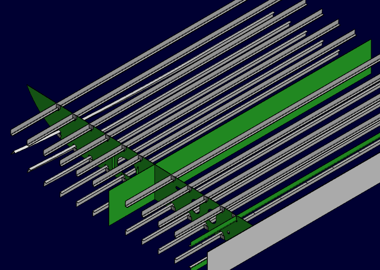
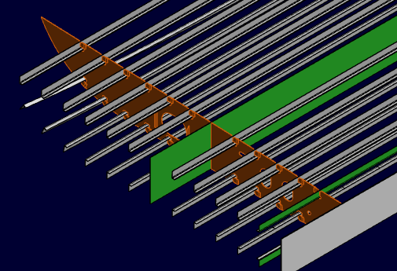
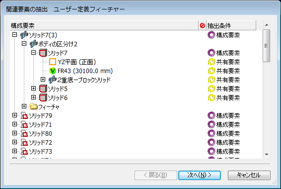
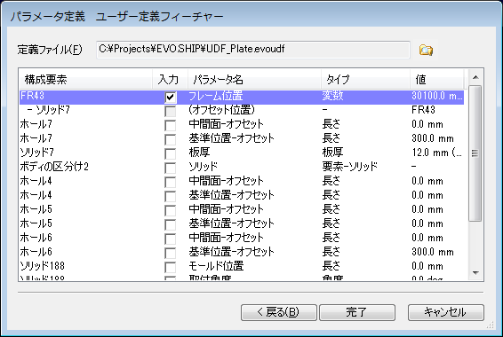
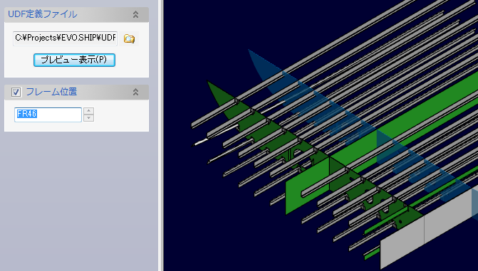
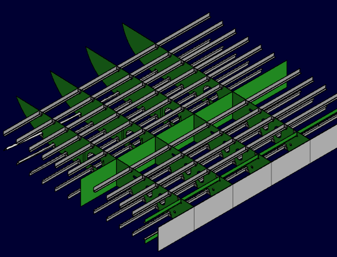

あるフレーム位置で、プレートや穴、補強部材を作成します。

新規-ユーザー定義フィーチャーで作成します。
プレートとカラープレート、条材を構成要素として選択します。

関連要素の自動抽出は「すべて共有」とし、OKボタンでウィザードダイアログを表示します。
選択された構成要素以外は全て共有要素となっています。

特に変更する必要なないので、「次へ」でパラメータ定義へ移動します。
定義ファイルを設定します。
可変パラメータをチェックして名称を設定します。
フレーム位置を変更したいので、変数の入力をチェックして、パラメータ名を入力します。

「完了」ボタンで定義ファイルを作成します。
モデルにデッキを挿入-ユーザー定義フィーチャーで作成します。
先に作成した定義ファイルを選択します。
フレーム位置の変数を変更し、OKボタンでユーザー定義フィーチャーが作成されます。

次のフレーム位置を入力していくことで、連続してプレート形状が作成できます。
